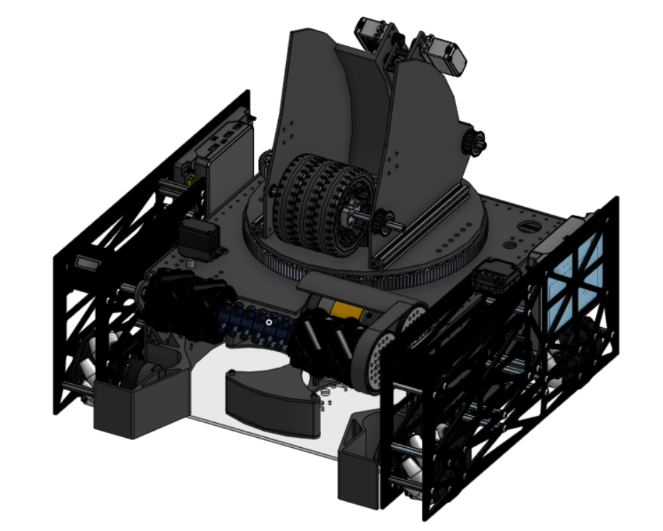

Overview
As part of Regression Robotics — a rookie FTC team — I helped lead the full mechanical and strategic development of a competition robot built around a turret-based scoring system, precise odometry, and a fast, reliable scoring cycle. We won our first Iowa scimmage, raised over $15,000 in sponsorships, and ran an extensive outreach program supporting the broader FIRST community.

Design Philosophy
We applied a structured design process: game analysis and strategy, brainstorming with decision matrices, rapid prototyping, detailed CAD, fabrication and integration, modular programming, and continuous data-driven iteration. Early on we aimed for complex mechanisms to maximize scoring, but testing revealed that simpler, more robust designs consistently performed better under match pressure — so we prioritized reliability, ease of maintenance, and cycle consistency.
Scoring Subsystems
Spindexer
The primary indexing system organizes game elements and advances them one at a time, preventing jams and double-feeding. I tuned spacing and rotation speed for smooth transitions under continuous intake.
Serializer
Feeds elements into the shooter with consistent entry angle and spacing. Refined geometry and timing minimize friction and eliminate misalignment during rapid cycling — directly improving shot consistency.
Turret
Provides horizontal aiming flexibility so the robot can score from multiple field positions without repositioning the drivetrain. We prioritized structural rigidity and feedback-based rotational control to hold alignment while the robot is in motion, reducing driver correction time.
Shooter
Tuned for repeatable velocity and trajectory consistency. We iterated on flywheel speed and compression geometry to balance range and accuracy, prioritizing vibration reduction to maintain precision over extended match cycles.

Odometry & Autonomous Navigation
For precise autonomous movement, the robot uses three dead-wheel odometry pods — two parallel and one perpendicular with an offset — to track position independently of wheel slip. By calibrating encoder ticks per revolution against wheel circumference, we convert target distances into tick counts:
distance = (encoder_ticks / ticks_per_revolution) × wheel_circumference wheel_circumference = π × wheel_diameter Δx = r × ((ΔE_L + ΔE_R) / 2) Δy = r × ΔE_S Δθ = (r / b) × (ΔE_R − ΔE_L)
We tune acceleration, deceleration, and lateral/angular/forward motion with a PID controller, and combine odometry with the PedroPathing path-planning library for consistent autonomous routines. Each movement is validated individually before being combined into full autonomous cycles.
Software Architecture
Our codebase uses a modular structure that separates drivetrain, mechanisms, sensors, and autonomous routines into organized subsystems, improving readability, debugging efficiency, and scalability.
- Driver-assist features including motion smoothing and preset scoring positions to reduce driver workload
- PID-controlled movement for accurate turns and consistent scoring
- Incremental, data-driven autonomous development with version control and structured testing
Leadership, Finances & Outreach
Beyond engineering, I helped lead the team's operations and community impact:
- Raised over $15,000 from sponsors including PTC Onshape, The Hartford, Gene Haas Foundation, Polymaker, IEEE, and Mitsubishi — maintaining a $2,000 reserve at all times
- Founded an alliance with six teams across multiple states
- Built a grant resource list accessed 2,500+ times and helped 114+ FTC/FLL teams with fundraising
- Mentored 9+ teams and saved two dying programs (teams 26936 and 5072) that were about to fold
- Ran programming workshops (modular code, PID fundamentals, autonomous testing) and mock judging sessions for younger teams
Results
- Won our first Iowa scrimmage as a rookie team
- Built a consistent, turret-based scoring cycle with reliable autonomous navigation
- Established a sustainable, well-funded program and a lasting community impact
What I Learned
The biggest lesson was that strong engineering comes from iteration, simplicity, and communication. Simpler, robust designs beat ambitious but fragile ones under match pressure. Rapid prototyping and objective data — cycle times, autonomous accuracy, failure rates — guided better decisions than intuition alone. Clear coordination between the mechanical and programming teams prevented costly redesigns, and I learned to treat setbacks as a normal, valuable part of the engineering process.